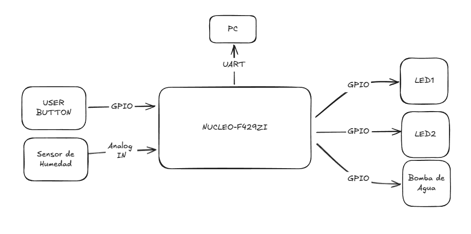

Título: Sistema de Riego Automático
Alumno: Julián Stejman
Descripción:
El sistema debe monitorear la humedad del suelo mediante un sensor analógico y activar el riego cuando el nivel de humedad esté por debajo de un umbral predefinido.
Si el usuario pulsa un botón, el sistema activa el riego manualmente, independiente del nivel de humedad. Mientras el botón esté pulsado, el riego continúa.
La medición de la humedad se realiza mediante un sensor de humedad como éste.
Para indicar que el sistema está regando, se enciende un LED.
Cada segundo se enciende y apaga un LED indicando que el sistema está activo. Se envía a través del puerto serie un resumen del estado del sistema:
- Estado del riego (activo / inactivo)
- Lectura del botón (presionado /no presionado)
- Nivel de humedad actual
- Tiempo hasta la próxima medición de humedad
Plataforma de desarrollo:
NUCLEO-F429ZI
Periféricos a utilizar
- USER BUTTON: Fuerza el riego manual mientras se lo sostiene presionado.
- LED 1: Se encenderá para indicar que el sistema está regando.
- LED 2: Se enciende y apaga cada un segundo para indicar que el sistema está activo.
- ANALOG IN 1: Se utiliza para leer el nivel de humedad del suelo mediante un sensor analógico.
- UART: Se utiliza para enviar información de estado del sistema a la PC.
- Bomba de agua: Mueve agua de un recipiente a otro lado a través de una manguera.
Diagrama en bloques:
